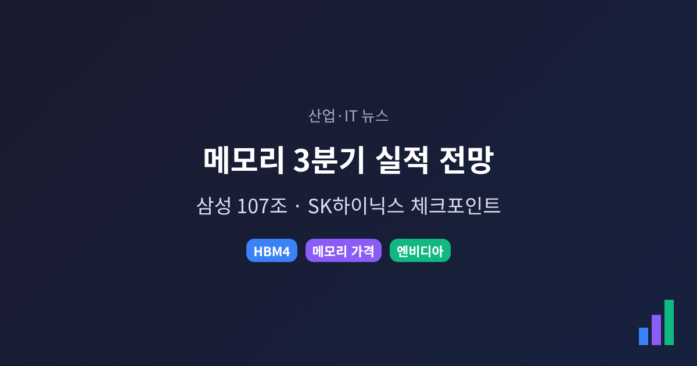
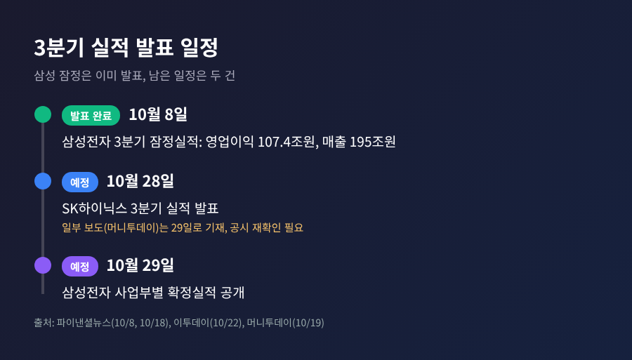
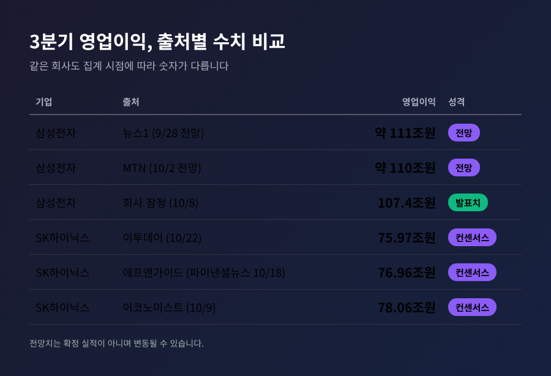
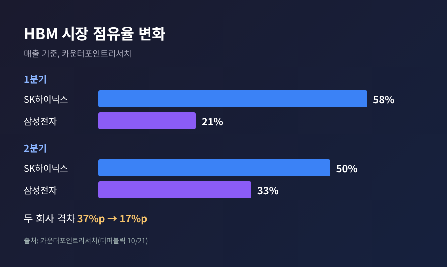
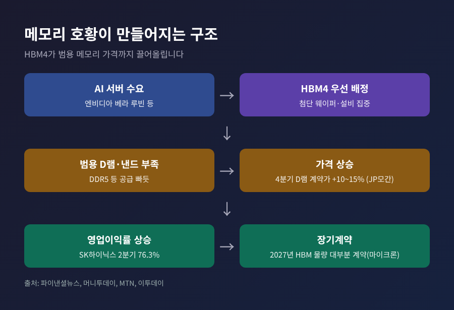
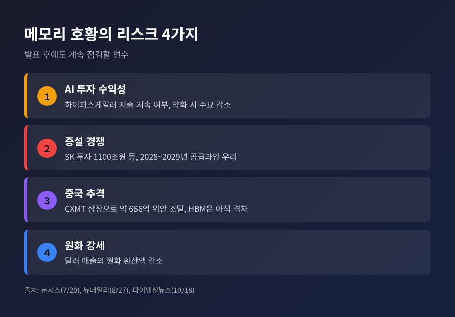

산업·IT 뉴스 | 2026-10-24
이 글은 시장 해설이며 투자 권유가 아닙니다. 수치 가운데 '전망'과 '컨센서스'는 확정 실적이 아니며, 실제 발표와 다를 수 있습니다.
세 줄 요약 - 삼성전자는 10월 8일 3분기 잠정 영업이익 107조4000억원을 이미 발표했고, 남은 관전 포인트는 SK하이닉스(10월 28일 예정)와 삼성의 사업부별 확정실적(10월 29일 예정)입니다. - 이번 호황의 뼈대는 HBM4 수요, 범용 메모리 가격 상승, 엔비디아라는 핵심 고객 세 가지입니다. - 리스크는 AI 투자 수익성, 증설 경쟁, 중국 업체의 추격입니다. 발표 후에는 숫자보다 영업이익률과 4분기 가이던스를 보시길 권합니다.
이번 글에서는 삼성전자와 SK하이닉스의 3분기 실적을 앞두고 나온 전망치를 정리해 보겠습니다. 합산 영업이익 180조원 돌파 전망이 나오는 배경과, 발표 뒤 무엇을 확인해야 하는지가 중심입니다.
먼저 일정부터 바로잡겠습니다. 삼성전자는 10월 8일 3분기 잠정실적을 공시했습니다. 연결 기준 매출은 195조원, 영업이익은 107조4000억원이었습니다(파이낸셜뉴스, 10월 8일). 전년 동기보다 영업이익은 782.5% 늘었고, 국내 기업 최초의 분기 영업이익 100조원 돌파였습니다.
그러니 지금 '삼성 100조 이상 전망'은 전망이 아니라 이미 나온 잠정치입니다. 아직 남은 것은 사업부별 세부 내용입니다. 보도에 따르면 삼성의 확정실적 공개는 10월 29일입니다(파이낸셜뉴스 10월 18일, 이투데이 10월 22일).
SK하이닉스는 아직 숫자를 내놓지 않았습니다. 발표일은 10월 28일로 보는 보도가 다수입니다. 머니투데이(10월 19일)는 29일로 적었고, 이코노미스트(10월 9일)는 28일 또는 29일로 확정하지 않았습니다. 발표 전에 회사 공시를 다시 확인하시길 권합니다.

합산 180조원이라는 숫자는 이투데이(10월 22일) 기준입니다. 삼성 잠정 영업이익 107조4000억원에 SK하이닉스 컨센서스 75조9712억원을 더해 영업이익 183조3712억원이 나옵니다. 합산 매출은 291조6633억원입니다.
문제는 SK하이닉스 컨센서스가 출처에 따라 다르다는 점입니다. 에프앤가이드 기준으로 파이낸셜뉴스(10월 18일)와 머니투데이는 영업이익 76조9640억원, 영업이익률 약 78.4%를 전했습니다. 이코노미스트(10월 9일)는 78조600억원이었습니다. 집계 시점과 대상 증권사가 달라 생긴 차이로 보이며, 어느 쪽이 맞다고 단정하기 어렵습니다.
삼성은 오히려 기대보다 낮았습니다. 9월 말 뉴스1은 삼성 약 111조원, 합산 약 190조원을 전망했고, 10월 초 MTN은 삼성 약 110조원을 내다봤습니다. 실제 잠정치는 107조4000억원이었습니다.

수익성도 눈여겨볼 대목입니다. SK하이닉스의 영업이익률은 2025년 4분기 58.4%, 2026년 1분기 71.5%, 2분기 76.3%로 올라왔습니다. 일부 증권사는 3분기에 80%를 넘길 수 있다고 봅니다. 비교 대상으로 거론된 마이크론의 3~5월 분기 영업이익률이 80.4%였습니다(파이낸셜뉴스).
한 가지 눈에 띄는 점이 있습니다. SK하이닉스 3분기 영업이익 전망치는 석 달 전 81조5122억원에서 5.6% 내려갔습니다. 파이낸셜뉴스는 원화 강세로 달러 매출의 환산액이 줄어든 점을 꼽았고, 더퍼블릭은 엔비디아 '루빈' 일정 지연으로 HBM4 출하가 기대에 못 미쳤다는 분석을 전했습니다. 하향 이유를 두고 해석이 갈리는 셈입니다.
첫째는 HBM4입니다. SK하이닉스는 7월 2분기 실적 발표에서 HBM4 대량 출하를 2분기에 시작했다고 밝혔습니다(더퍼블릭). 머니투데이와 MTN은 엔비디아 차세대 플랫폼 '베라 루빈'용 HBM4 매출이 3분기부터 본격 반영된다고 전합니다.
점유율은 달라지고 있습니다. 카운터포인트리서치에 따르면 HBM 점유율은 1분기 SK하이닉스 58%, 삼성전자 21%에서 2분기 SK하이닉스 50%, 삼성전자 33%로 바뀌었습니다. 격차가 37%포인트에서 17%포인트로 줄었습니다. JP모간은 SK하이닉스의 점유율을 작년 60%, 올해 46%, 내년 41%로 내다봅니다(MTN).

둘째는 가격입니다. 첨단 웨이퍼와 설비가 HBM에 먼저 배정되면서 DDR5 같은 범용 D램과 낸드의 공급이 빠듯해졌습니다. 이투데이가 전한 증권사 추정으로는, 3분기 SK하이닉스 D램 평균판매가격이 전분기보다 22%(메리츠증권), 삼성 범용 D램은 21%(유진투자증권) 오를 것으로 봅니다. 낸드는 삼성 22%, SK하이닉스 15%입니다. JP모간은 4분기 D램 계약가 인상률을 10~15%로 높였습니다(머니투데이, 기존 3~8%).
흥미로운 대목은 수혜의 방향입니다. 이투데이는 HBM 비중이 큰 SK하이닉스가 범용 D램 가격 급등의 수혜를 상대적으로 덜 받았다고 분석했습니다. 대신 HBM3E에서 HBM4로 공급이 넓어지며 이익 기여도가 높아질 것이라는 설명입니다.
셋째는 고객입니다. 핵심 수요처는 엔비디아입니다. JP모간은 올해 엔비디아향 HBM 공급에서 SK하이닉스 비중을 54%로 추정했습니다(머니투데이). 삼성은 구글과 AMD 주문도 확보하는 중이라고 MTN은 전합니다. 마이크론 CEO는 2027년 HBM 공급 대부분을 계약했고 가격이 올해보다 크게 올랐다고 밝힌 것으로 보도됐습니다. 고객 쏠림이 약점이면서, 동시에 장기계약이라는 안전판이기도 합니다.

예전의 메모리 호황은 증설과 함께 끝나곤 했습니다. 지금은 증설이 오히려 호황의 일부로 이야기됩니다. 그래서 점검할 리스크가 셋입니다.
첫째, AI 투자 수익성입니다. 뉴시스(7월 20일, 파이낸셜타임스 보도 요약)에 따르면 마이크로소프트·메타·아마존 같은 거대 클라우드 기업의 AI 지출 지속 능력에 의문이 제기됩니다. 권석준 성균관대 교수는 투자 수익이 약해지면 메모리 수요가 줄 수 있다고 경고했습니다. 같은 보도는 공급과잉이 2028~2029년께 재연될 수 있다는 분석도 전했습니다. MTN(10월 2일)은 실적 기대에도 주가가 그만큼 오르지 못하는 '정점 우려'를 짚었습니다.
둘째, 증설입니다. SK하이닉스는 5년 내 생산능력 2배, 총 투자 1100조원 계획을 밝혔고, 용인 Y2와 청주 M17에 54조3000억원 투자를 이사회가 승인했습니다. 삼성은 2040년까지 국내 반도체에 2100조원, 마이크론은 2035년까지 미국에 2500억 달러 이상을 투자할 계획이라고 합니다(뉴시스, 뉴데일리). 반대 논리도 있습니다. 맥쿼리는 HBM이 웨이퍼를 많이 쓰고 선단공정 확장이 어려워 이번에는 다를 수 있다고 봤고, 노무라는 공급에 의미 있는 영향이 나오기까지 최소 5년이 걸린다고 추정했습니다.
셋째, 중국입니다. CXMT는 7월 상하이 상장으로 약 666억 위안을 조달했고 D램 세계 4위입니다(뉴데일리). 모건스탠리는 2028년까지 순증 D램 웨이퍼 능력의 약 30%가 중국에서 나올 것으로 본다고 합니다(뉴시스). 다만 HBM 경쟁력은 아직 크게 뒤처진다는 평가입니다.
원화 강세도 변수입니다. 달러로 번 매출이 원화로 줄어들기 때문입니다.

정리하면 이렇습니다. 숫자가 컨센서스를 웃도는지보다 아래 항목을 보시는 편이 낫다고 생각합니다.
[참고] 위 전망치는 모두 증권사·언론의 추정이며, 발표 뒤 달라질 수 있습니다.
끝으로 한 마디만 더 드리겠습니다. 호황의 크기를 묻기 전에, 그 호황이 얼마나 오래 이어질지를 따져 보시기를 권합니다. 숫자는 28일과 29일에 확인되지만, 사이클의 방향은 그 뒤 분기에 드러날 것입니다.
본 글은 정보 제공이 목적이며 특정 종목의 매수·매도를 권유하지 않습니다. 투자 판단과 책임은 본인에게 있습니다.
출처: 파이낸셜뉴스(10/8, 10/18), 이투데이(10/22), 더퍼블릭(10/21), 뉴스1(9/28), 머니투데이(10/19), MTN(9/29, 10/2), 뉴시스(7/20), 뉴데일리(8/27), 이코노미스트(10/9)